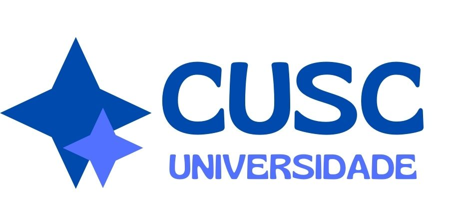

|  | |
Centro Universitário de Santa Catarina (CUSC)Bem-vindo ao Centro Universitário de Santa Catarina (CUSC), onde o conhecimento transforma vidas e constrói futuros. Localizado no coração de Santa Catarina, o CUSC é uma instituição de ensino superior comprometida com a excelência acadêmica, a inovação e o desenvolvimento pessoal dos nossos alunos. Nossa missão é proporcionar uma educação de qualidade, preparando profissionais competentes e éticos, prontos para enfrentar os desafios do mercado de trabalho e contribuir para o desenvolvimento sustentável da sociedade. No CUSC, valorizamos a diversidade, o pensamento crítico e a responsabilidade social, promovendo um ambiente de aprendizado inclusivo e colaborativo. Oferecemos uma ampla gama de cursos de graduação e pós-graduação, todos cuidadosamente elaborados para atender às demandas do mundo contemporâneo. Nosso corpo docente é composto por profissionais altamente qualificados e apaixonados pelo ensino, que estão sempre dispostos a compartilhar seu conhecimento e experiência com nossos estudantes. No CUSC, acreditamos que a educação vai além da sala de aula. Por isso, incentivamos a participação em projetos de pesquisa, extensão e atividades culturais, proporcionando uma formação integral e enriquecedora. Nossas modernas instalações e recursos tecnológicos de ponta garantem um ambiente propício para o aprendizado e a inovação. Venha fazer parte da família CUSC e descubra um universo de possibilidades. Aqui, cada aluno é único e tem seu potencial valorizado. Estamos prontos para ajudá-lo a alcançar seus sonhos e construir um futuro brilhante.
Endereço: Com uma infraestrutura moderna e bem equipada, o campus do CUSC oferece um ambiente propício ao aprendizado e ao desenvolvimento acadêmico. Além disso, nossa localização permite aos estudantes fácil acesso a diversas opções de transporte público, alimentação, lazer e serviços essenciais. PreçosNo CUSC, acreditamos que a educação de qualidade deve ser acessível a todos. Por isso, oferecemos uma política de preços justa e transparente, que visa facilitar o acesso ao ensino superior. Valores das Mensalidades: Cursos de Graduação: A partir de R$ 800,00 por mês. Cursos de Pós-Graduação: A partir de R$ 1.200,00 por mês. Descontos e Bolsas: Entendemos a importância de apoiar nossos estudantes, e por isso disponibilizamos diversas opções de descontos e bolsas de estudo:
Formas de Pagamento: Oferecemos diversas opções de pagamento para maior comodidade dos nossos alunos:
|
|
| TODOS OS DIREITOS RESERVADOS | |